Sri Dalada Maligawa
The Dalada Maligawa, also known as, the Temple of the Tooth, is one of the landmark sites in the city of Kandy. It is located in the heart of Kandy town surrounded by the lake and the commercial district. The Maligawa was once the royal palace inhabited by the king and his consorts, but after the demise of the Kandyan Kingdom the palace was transformed into a Buddhist temple that holds Buddha’s tooth.

...
 The Temple of the Sacred Tooth Relic is a world-renowned place of worship, where the left Canine tooth of Gautama Buddha is enshrined.
The temple which is venerated by thousands of local & foreign devotees and tourists daily was named as a world heritage by UNESCO in 1988.
The Temple of the Sacred Tooth Relic is a world-renowned place of worship, where the left Canine tooth of Gautama Buddha is enshrined.
The temple which is venerated by thousands of local & foreign devotees and tourists daily was named as a world heritage by UNESCO in 1988.
The temple which carries a lot of value to Buddhists all over the world also has immense cultural value.
The architecture is of unique Kandyan architectural style with a combination of the unique style used to build “Dalada Mandira” the shrines which housed the Sacred Tooth Relic previously in other kingdoms.
The temple of the Sacred Tooth Relic is built in the city of Kandy near the ancient Royal Palace which is situated to the North of the temple and the forest reserve called “Udawaththa Kelaya” to the East.
The famous Kandy Lake also known as “Kiri Muhuda” to the South and “Natha & Paththini Devala” on the West.
The temple is adorned with intricate carvings using gold, silver, bronze and ivory.
 The Sacred city of Kandy is the final location of the Sacred Tooth Relic of Gautama Buddha.
The Sacred relic was brought to Sri Lanka by Princess Hemamala & Prince Dantha from the city of Kalinga in ancient India, during the reign of King Keerthi Sri Meghavarna (Kithsirimevan 301 -328).
It became a symbol of Sri Lankan kings and was preciously guarded in a special shrine built within the precincts of the royal palace, wherever the capital was located.
The ruins of such edifices remain in ancient capitals of Anuradapura, Pollonnaruwa, Dambadeniya, Yapahuwa, Kurunegala, Kotte and Gampola.
While in Kandy the last Kingdom the Temple of the Sacred Tooth Relic continues to be the greatest shrine to receive the utmost veneration of the Buddhist world.
The Sacred city of Kandy is the final location of the Sacred Tooth Relic of Gautama Buddha.
The Sacred relic was brought to Sri Lanka by Princess Hemamala & Prince Dantha from the city of Kalinga in ancient India, during the reign of King Keerthi Sri Meghavarna (Kithsirimevan 301 -328).
It became a symbol of Sri Lankan kings and was preciously guarded in a special shrine built within the precincts of the royal palace, wherever the capital was located.
The ruins of such edifices remain in ancient capitals of Anuradapura, Pollonnaruwa, Dambadeniya, Yapahuwa, Kurunegala, Kotte and Gampola.
While in Kandy the last Kingdom the Temple of the Sacred Tooth Relic continues to be the greatest shrine to receive the utmost veneration of the Buddhist world.
The first “Dalada Madura” in Kandy, which housed the Sacred Tooth Relic was built by King Wimaladharmasuriya the first during his reign from year 1592 – 1604.
History reveals that this was destroyed by the Portuguese during their invasions.
The second temple was built in the same location by King Rajasinghe the Second during his reign from 1635 – 1687, which was burnt by the Dutch.
The Dalada history says in year 1687 King Wimaladharmasuriya the Second built a 3 storeyed Dalada Madura and performed Dalada rituals with great devotion but with time the building was decayed and destroyed.
Later his son King Sri Veera Parakrama Narendrasinghe who reigned from 1707 – 1739 built the 2 storeyed Dalada Madura which one can see today.
The South Indian Kings who ruled the country from Senkadagala renovated and protected the shrine which was built by King Narendrasinghe.
The temple was finely renovated and beautified by King Keerthi Sri Rajasinghe to its present appearance.
Paththirippuwa or the Octagonal Pavilion was constructed by King Sri Wickrama Rajasinghe who reigned from year 1798 – 1815.
Protectin of the Sacred Tooth Relic and conducting religious rituals without a break is being carried out to the present day under the strict surveillance of the three chief custodians of the Tooth Relic, the most Venerable Mahanayake theros of Malwatta and Asgiriya chapters and the lay custodian, the Diyawadana Nilame.
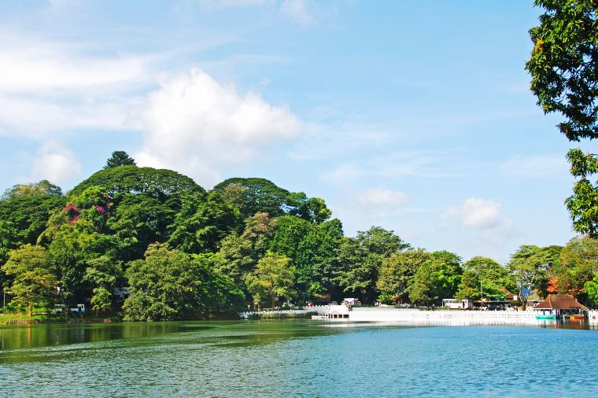
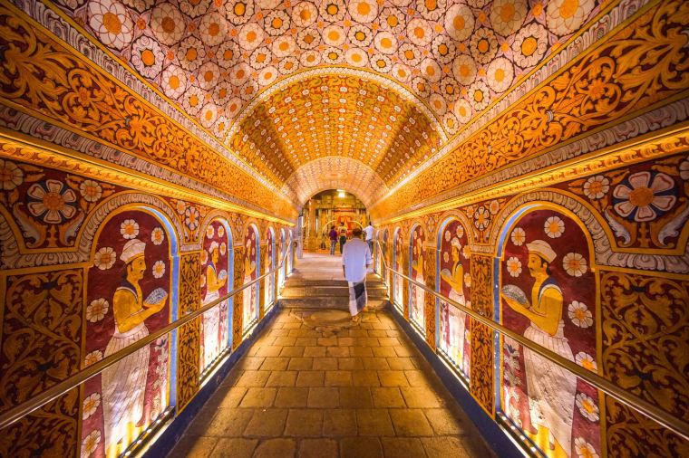
 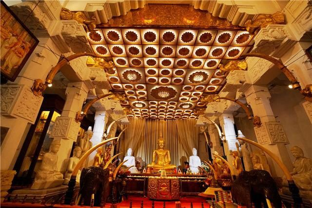
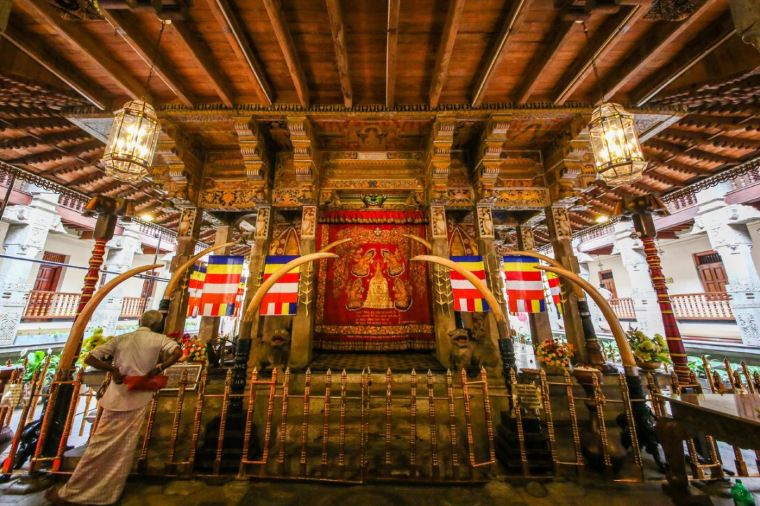
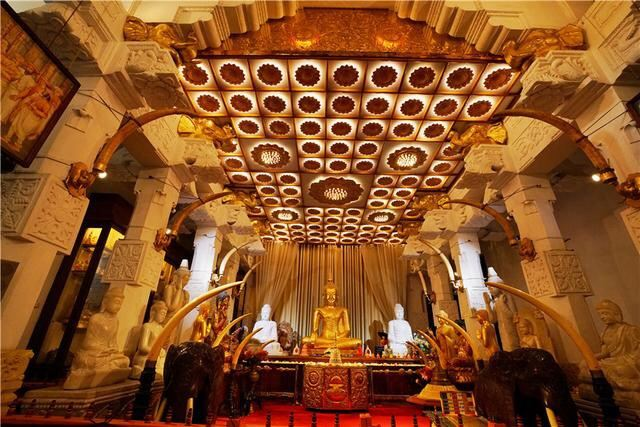
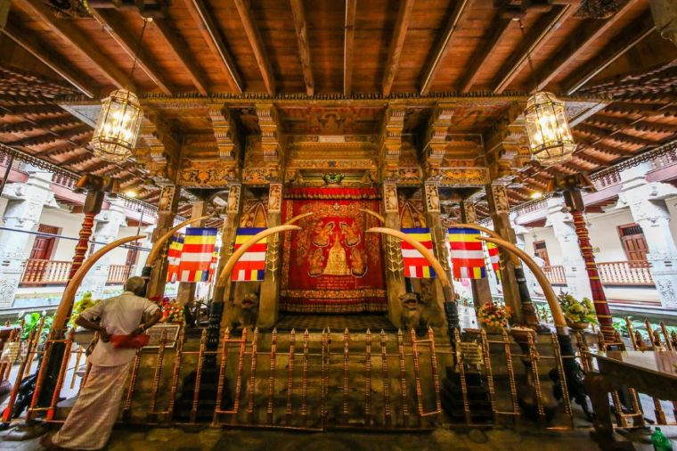


 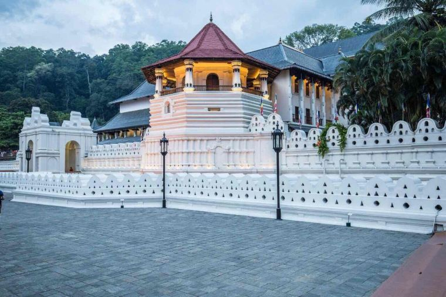
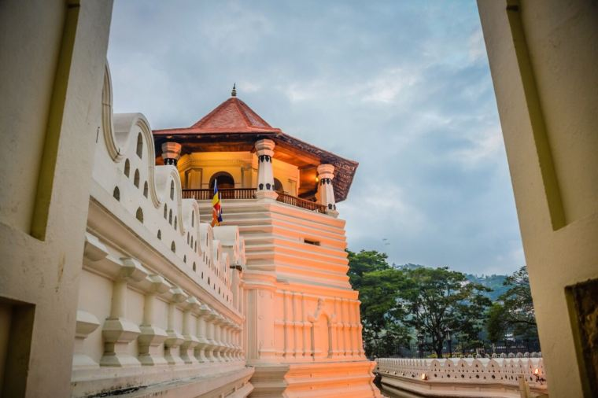
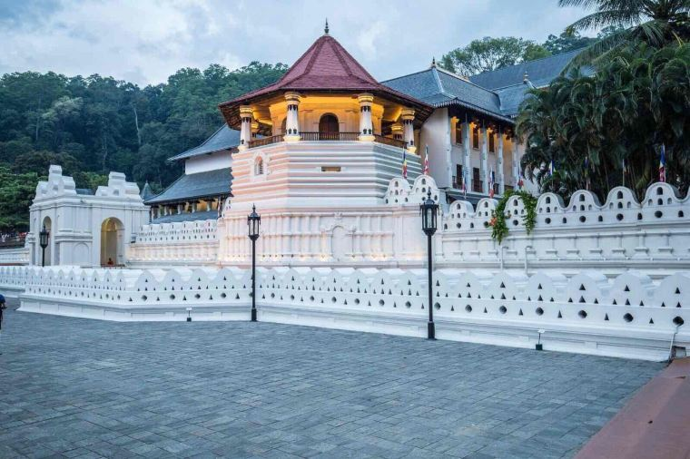
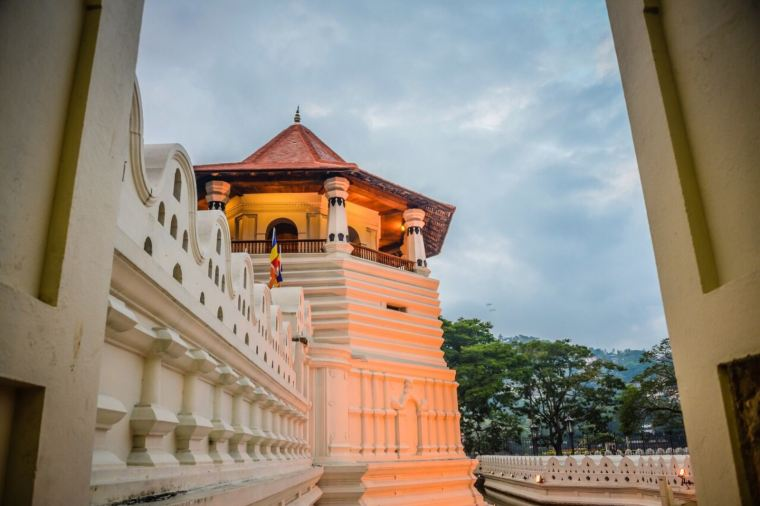


 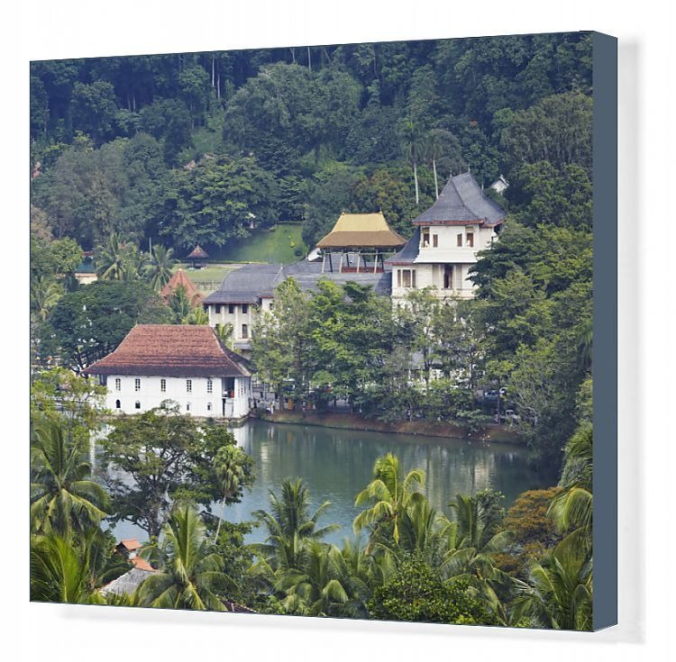
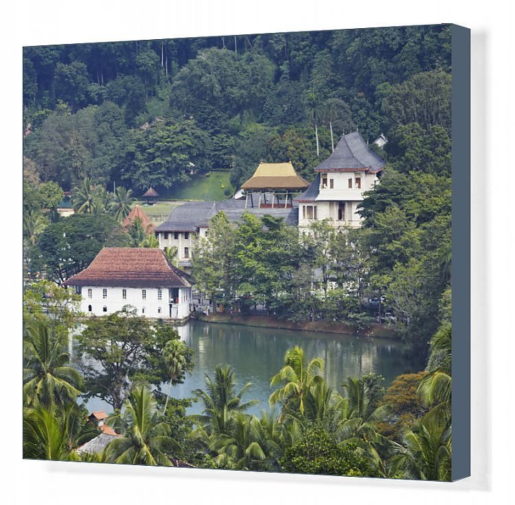

 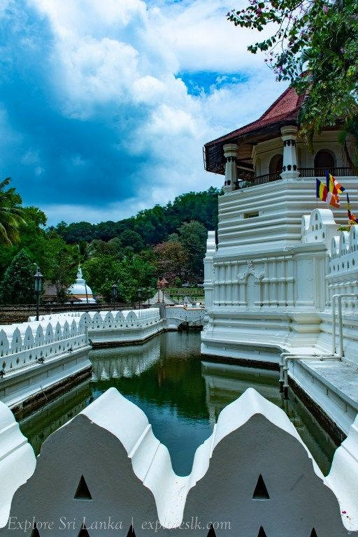
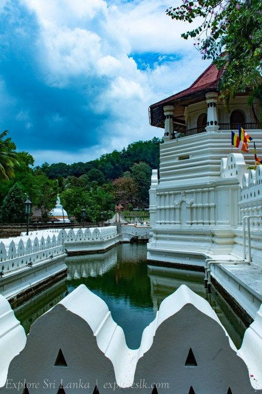
Sigiriya
Do you know?
Sigiriya is a UNESCO listed world heritage site.
The rock is around 200 meters tall. The stunning inscribed shows you about the talent & creativity of Sigiriya builders.
Sigiriya opens every day from 7:00 AM – 04:00 PM
When you visit top of the Sigiriya, you can see the upper palace, middle compound, lower palace, beautiful garden, creative walls, graffiti etc. The architects have created this palace with natural air cooling & amazing watering system.
Come to visit the Sigiriya & enjoy the beauty of this palace. I’m sure it will be an unforgettable memory of your travel life.
...
Sigiriya is one of Sri Lanka’s most popular tourist attractions – and with good reason.
This ruined, fifth century city has some extraordinary features, including moat and wall fortifications, elaborately landscaped gardens, and a monastery.
But it is the two-hundred metre high granite rock that stands out from these ruins that is undoubtedly the star attraction, with its exquisite frescoes and the remains of a royal palace on the summit.
According to the Ravana watha Palm leaf book, Mayadanawa is the Architecture of the Sigiriya.
He buid the Sigiriya according to instruction given by Vessamuni / Wishrawa Muni (Father of Ravana).
Finally palace was dedicated for Ravana’s Brother King Kuwera(Waishrawana).
After-wards the Ravana has banished the Kuwera & Got the Sigiriya under his Control.
The history of Sigiriya is a long story.
The rock came into being as a result of a rivalry between two brothers.
The great rock fortress, Sigiriya was built by the King Kashyapa. King Kashyapa made this great place to protect himself from his brother King Mogallana.
The Sigiriya rock is entwined with a tragic event. The heir to the throne had been King Mogallana, but King Kashyapa had taken power by force. King Kashyapa was afraid that his brother would come back again to take back his right to the throne. Therefore, to protect himself, he built this rock fortress.
He did not want any invasion to happen by his brother. The technology that has been used in creating the fort is excellent. The Sigiriya rock is decorated with colorful frescos. However, Moggallana was able to defeat Kashyapa, and after that, the rock fortress was destroyed. Earlier it used to be a Buddhist monastery, and after the palace was destroyed, it became a Buddhist monastery once again.
Sigiriya was discovered later in 1831 by Europeans. A major of the British army, Jonathan Forbes discovered Sigiriya on his way from Polonnaruwa.
Many historians and archaeologists started excavating this rock fortress, and it is through the excavations that all the glory of the rock was discovered.
One who goes to the top of the rock would see that it is a citadel, with gardens, and parks. Sigiriya is a massive rock which was built for protection, and the technology that has been used is advanced.
Its layout and the planning technology used in Sigiriya is extraordinary.
The Sigiriya arts are of beautiful women.
It is believed that the drawings are the reflections of the beautiful women who lived in King Kashyapa's palace.
The women were drawn to resemble Apsaras.
The facial expressions depicted on the woman's face, the use of color in the paintings attract tourists.
The most typical thing in these drawings is that each of these women wears delicate three-circled tattoos around their necks.
It indicates that the women belong to King Kashyapa.
They resembled supernatural and was a depiction of the grandeur of Kasyapa.
The drawings also resemble the Gupta style of painting in the Ajanta Caves in India.
One of the other main attractions of Sigiriya is the Sigiriya frescoes and Sigiriya paintings.
The murals can be seen once you climb the circular staircase.
The Sigiriya frescoes are the maidens with beautiful curves carrying flowers.
There are dressed in heavy garments, and it is believed that they are carrying flowers to the king for blessings.
There is a staircase in Sigiriya where you would see two enormous lion paws carved out of the rock.
It will lead up to a gigantic lion statue. It represents the pride and the strength of King Kashyapa.
The term Sigiriya derives from Sinha-Giri which means "Lion Rock." HCP Bell excavated the two enormous lion paws in 1898.
Sigiriya Graffiti can be seen on the lower area of the Mirror Wall.
The Graffiti contains reflections on the rock.
These reflections are the collections of thoughts of the many people who have visited the Sigiriya rock.
Visitors who have visited the rock, kings, common people and pilgrims have written their thoughts on the rock.
It is the beauty of the rock that they have written in verses.
The Sigiriya Graffiti gives an insight to the different people who have visited the rock, and in the graffiti, the beauty of the rock and the architecture that has been used is described.
The layout is organized in a way that on either side of the roads to the western entrance there are rectangular pools.
In front of the pools, there are limestone fountains.
The technology used is much advanced, and it is hard to believe how there could have been such technology during the ancient times.
 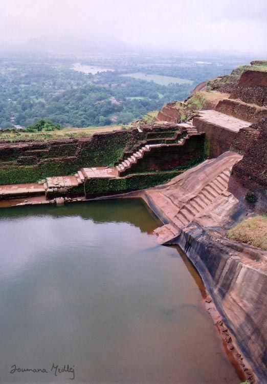
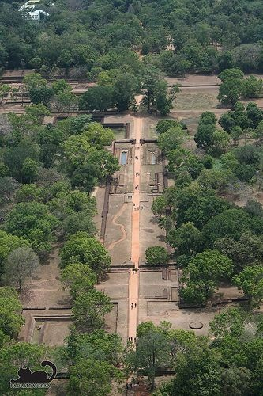
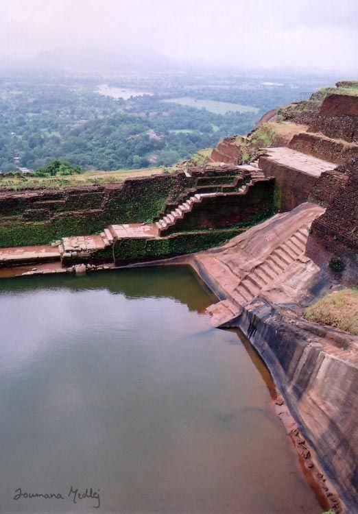
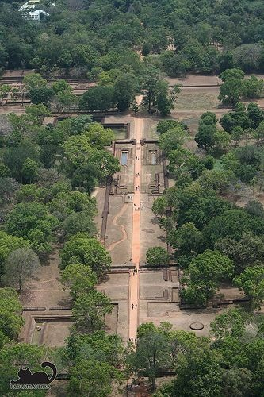

 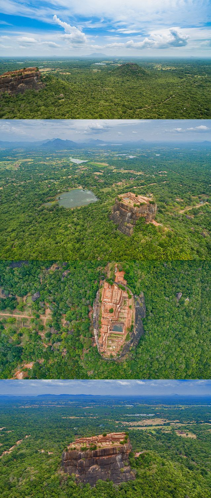
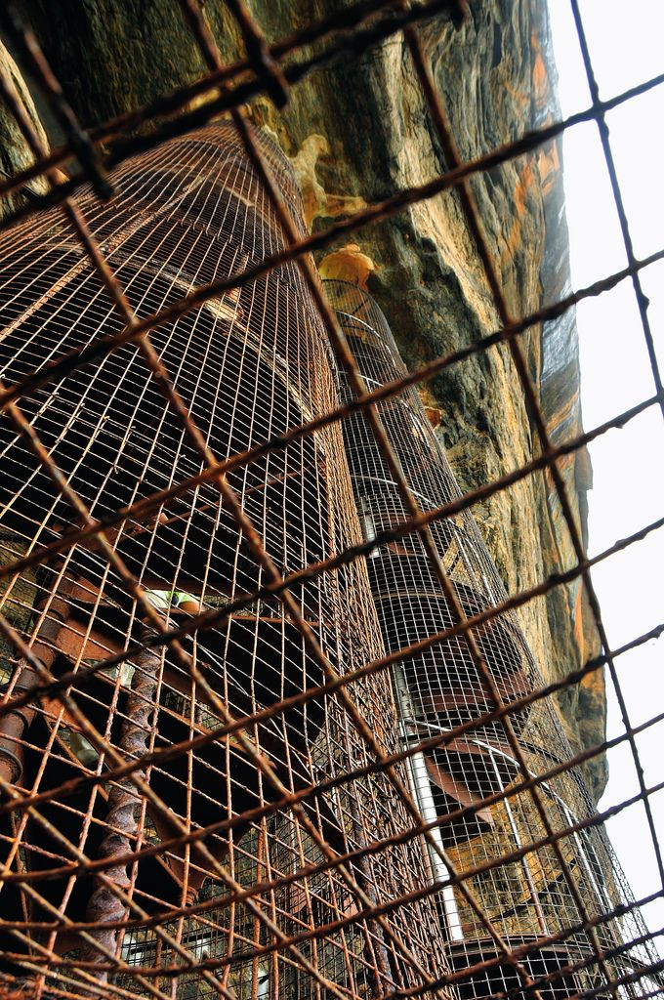
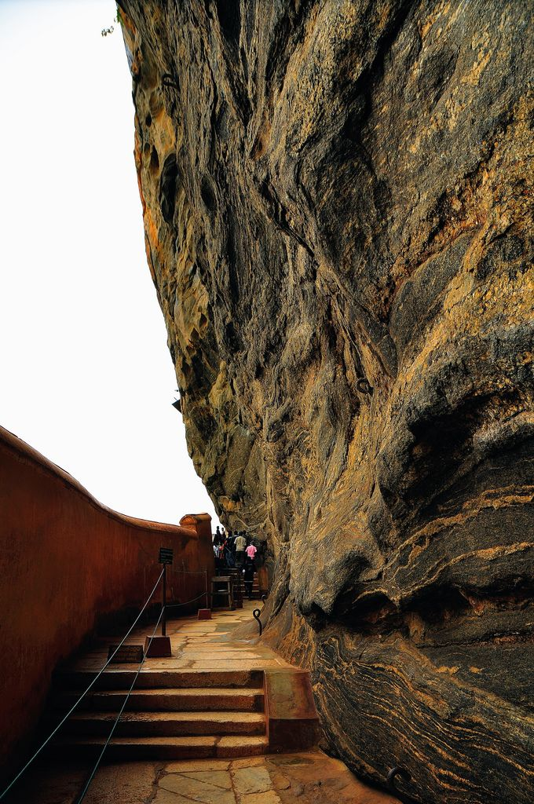
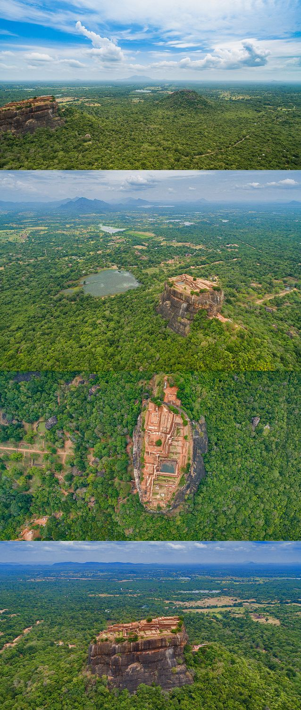
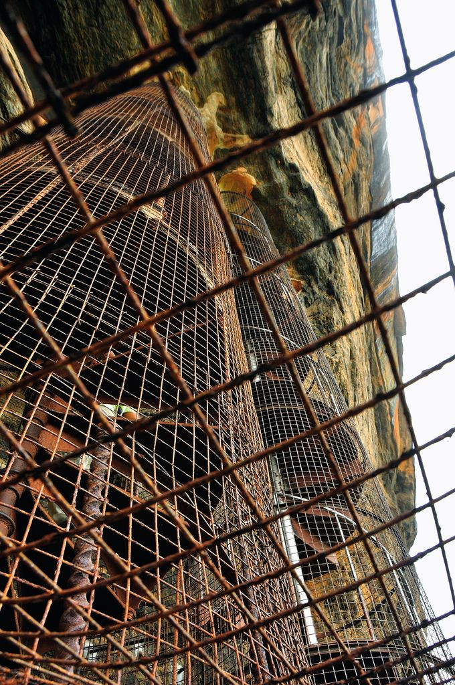
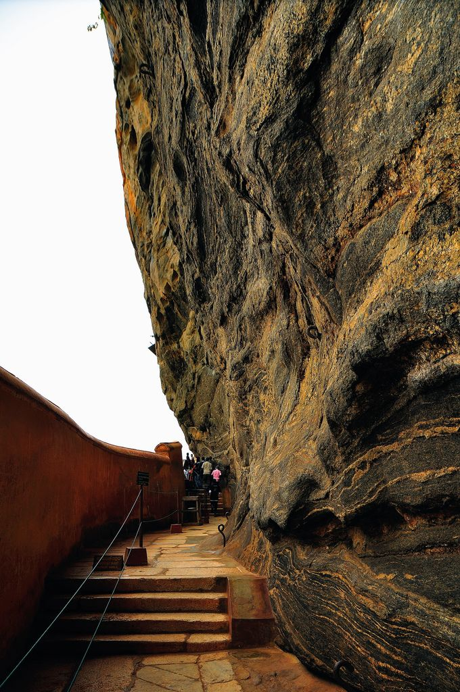


 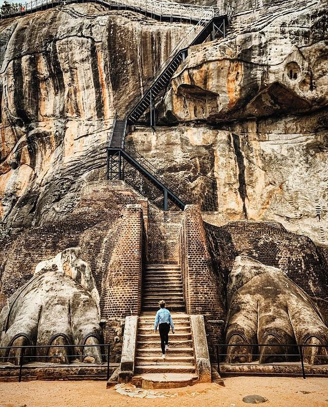
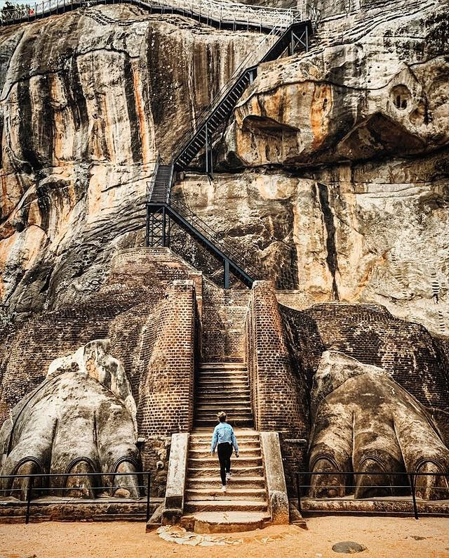
Yapahuwa Rock Fortress
...
Strong, dry breezes ruffle the quiet serenity of the temperate country side. Wild grass thrust through pleasantly undulating ground while a lone lizard revels in brilliant sunshine, poised on one of many ancient stone ruins. Overhead looms the Yapahuwa rock, 300-foot isolated fortified wonder with a history dating back to the 13th Century. In that era, Yapahuwa was Sri Lanka's seat of governance and home to the Sacred Tooth Relic of the Buddha. Today it is one of the country's most unique and important sites of historic interest containing abundant traces of ancient battlements and remnants of king Buvenekabahu's (1273-1284 AD) kingdom. It is also home to the singular Chinese-looking 'Yapahuwa Lion' stone sculpture, the likeness of which is reproduced in the country's newest Rs. 10 note. Historians compare Yapahuwa to the Sigiriya rock fortress but note that it was built on a much smaller scale. Its most remarkable masterwork remains an ornamental stairway that conducted the royal palace. Surrounding vistas of breathtaking beauty enriches the climb to the top; rambling jungle, rolling hills and sunbathed rocks combine to create a picture-perfect tableau. Yapahuwa is in the Pahala-visi-deka Korale, Wanni Hatpattu, of the Northwestern Province. Situated on the outskirts of Kurunegala, it is just three miles from the Maho railway station. For those choosing the rail option, hop off at the Maho station and either use the bus service that shuttles back and forth or, if adventurous enough, trek through the scenic countryside. The right footwear and a sun-hat are recommended for the entire expedition. The Yapahuwa rock rises abruptly from the plains. On its southern and eastern faces, terraces retained by walls permit access to the summit. The king had enclosed the city with a towering wall and a moat, protecting the palace within. A cave temple was built for monks at the apex. It still contains statues of the Buddha and paintings of the Kandyan period. Unlike Sigiriya, however, the palace was not constructed at the summit of the 91-metre flat-topped crag but on a lower level. Meanwhile, evidence suggests that the settlement on the rock was more urban than rural. Intriguingly, there is no mention of Yapahuwa beyond the 13th Century in Sri Lanka's historical sources. However, most recent archaeological excavations in Yapahuwa indicate that Buvenekabahu's hill top kingdom had close diplomatic ties with China. During early excavations, several Chinese ceramics were found. They are now known to be among the finest specimens discovered in the island. Unearthed, too were a large number of celadon pottery pieces and more than 1,000 Chinese coins. The history surrounding Yapahuwa rock is fascinating. It is also called 'Subha pabbata' (or 'Subha's rock') after a military leader named Subha who, perceiving the location's uses as a brilliant point of military defence, made Yapahuwa his stronghold before Buvenekabahu moved there.
 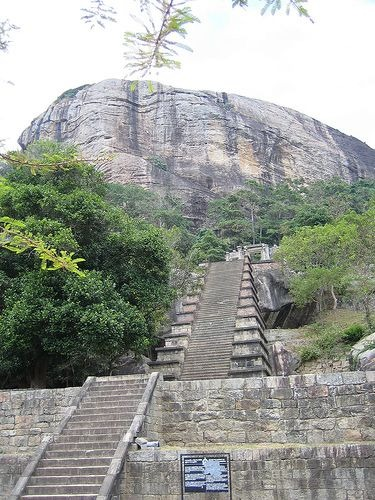
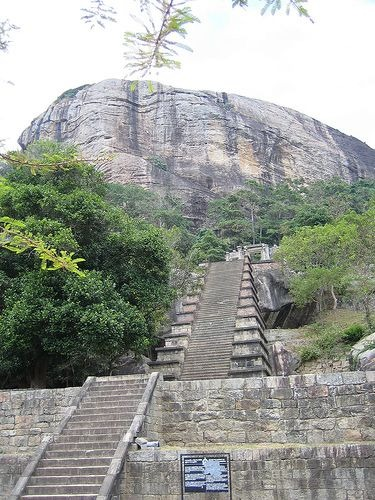


 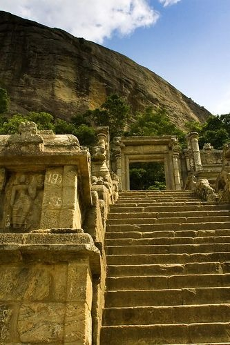
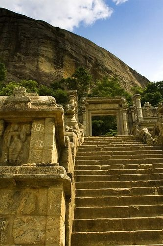


 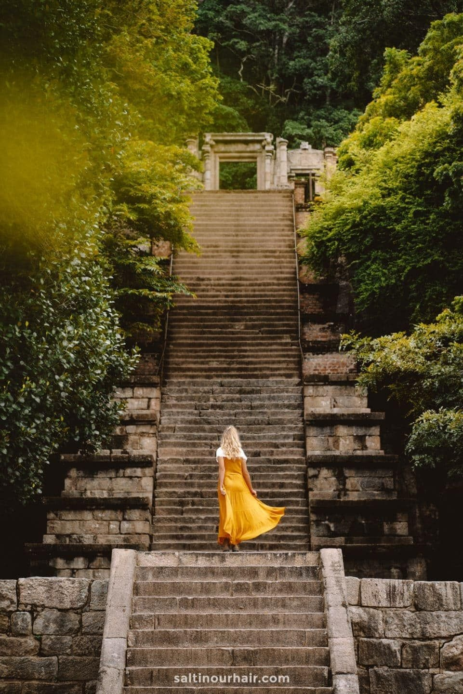
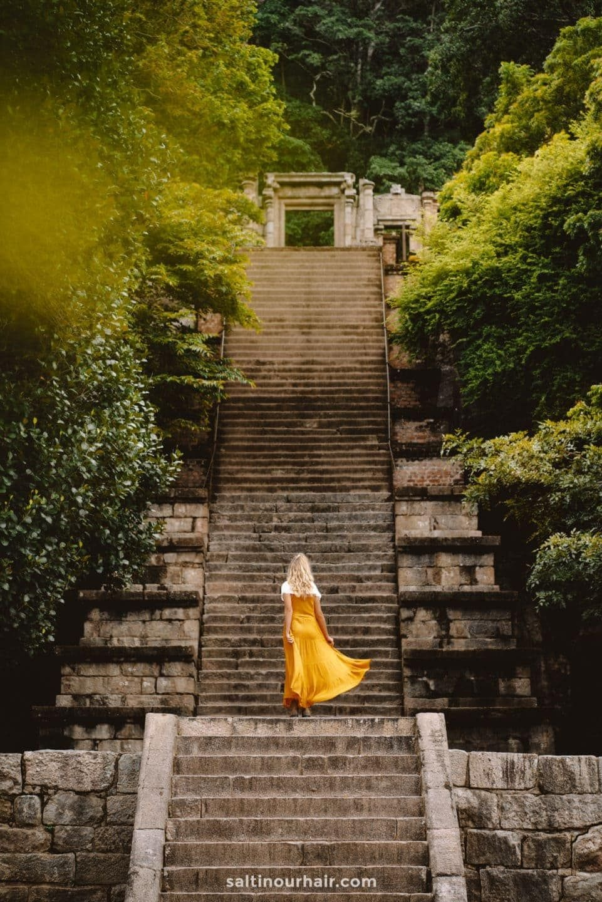
 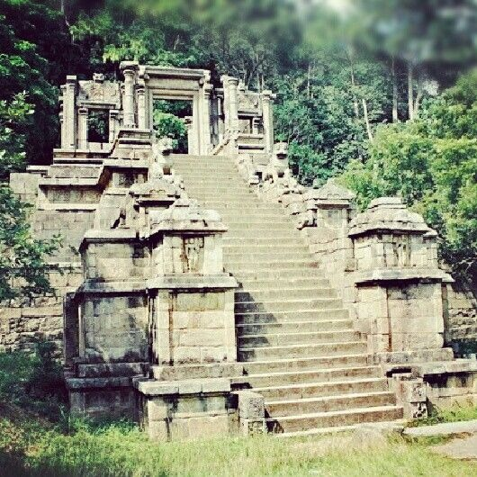
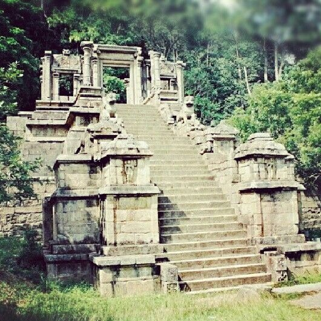
 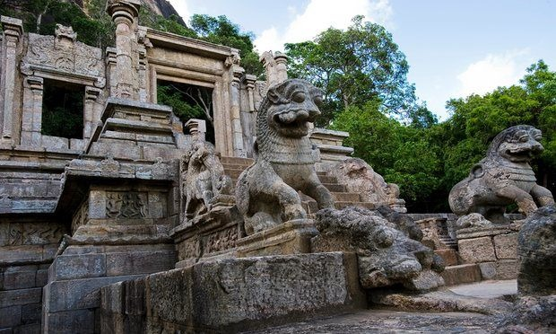
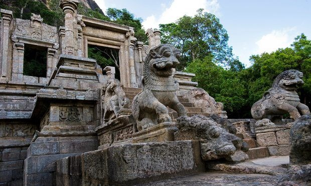

 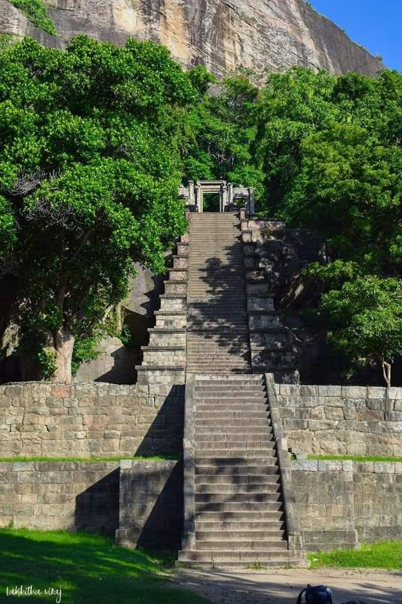
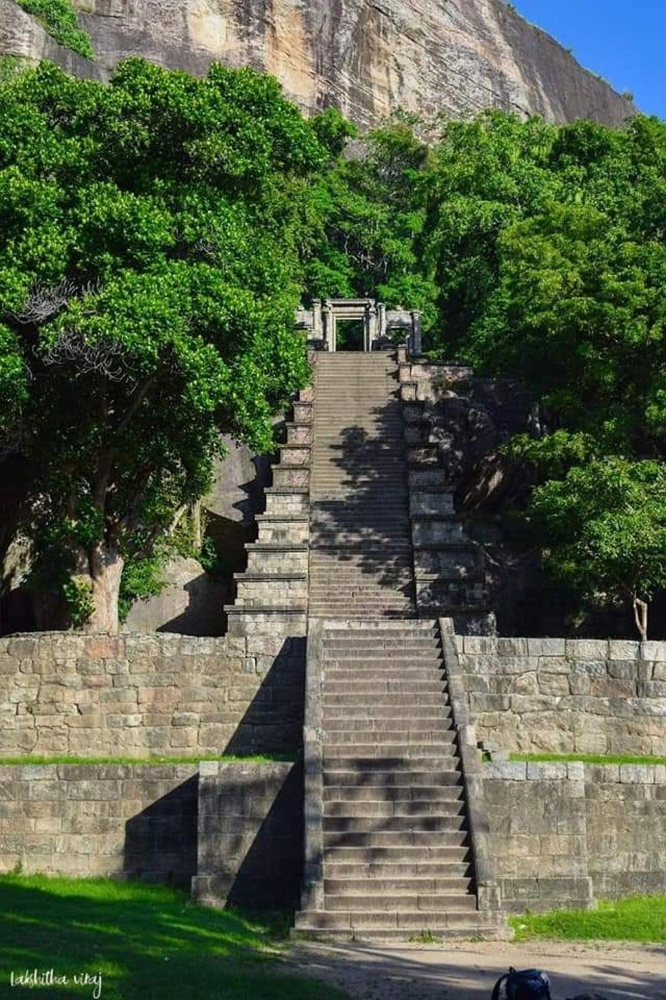


Kalpitiya Beach
Why visit Kalpitiya?
The Kalpitiya peninsula offers a sand-between-the-toes, get-away-from-it-all experience in an undiscovered part of the island, a long stretch of deserted beach with unique and captivatingly quirky places to stay.
Things To Do In Kalpitiya Beach
1. Dolphin and Whale Watching
2. Water Sports - Kitesurfing and Surfing

...
Kalpitiya, located in the North Western Province of Sri Lanka, is a collection of 14 islands and it is famous for its waterfront beauty.
This place is often considered as the future of Sri Lanka tourism.
The collection of islands along with the water lagoon has vast scopes of development in the future.
Kalpitiya Beach, situated in the far northern end, is a place for many watersports and dolphin and whale watching.
The beach is a long sandy spit, which can be easily accessed from the Kalpitiya lagoon on a boat.
This beautiful stretch of sand attracts a lot of tourists and the beach is truly bestowed with scenic beauty.
Whether you plan on a nice sunbath on the sandy shores, or dipping in the water for fun, Kalpitiya Beach in Sri Lanka is a must visit destination.
Surrounded by a close knit fishing community and rather untouched by the tourism industry, Kalpitiya beach is one of the hidden gems in Sri Lanka.
The Kalpitiya region is basically a marine sanctuary with habitats of various marine creatures.
The water near the Kalpitiya Beach is home to Spinner dolphins and a rare species of Sperm Whale, which is the principal attraction of the beach.
The warm sands and the tropical climate makes Kalpitiya Beach a perfect place for sunbathing.
Apart from these there are various other activities that you can partake in go snorkeling in the deep waters of the ocean and explore the marine life or take boat rides and canoe rides to explore the hidden wonders around the beach.
You can also enjoy a jeep rides along the sandy dunes of the beach along with spectacular views of the sunset.
You can also easily access the bar Reef, which is a beautiful coral garden at the center of the ocean, offering the greatest biodiversity as compared to other reefs in Sri Lanka.
Also the Wilpattu National Park is only 60 kms from the beach. This National Park is home to many varieties of animals.
The best time to visit Kalpitiya Beach is during the dry months, preferably between October to May.
It is a great time for water sports including kayaking, windsurfing, snorkeling and canoeing etc.
If you want to spot dolphins and the rare Sperm Whales then you should visit Kalpitiya Beach during the months of December to mid- April, it is during this time when the whales can be spotted in the water.
 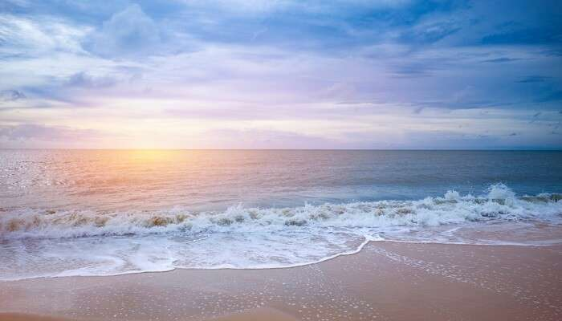
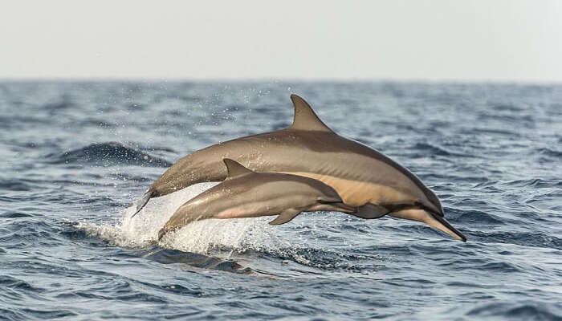
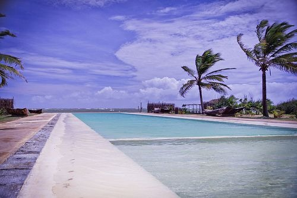
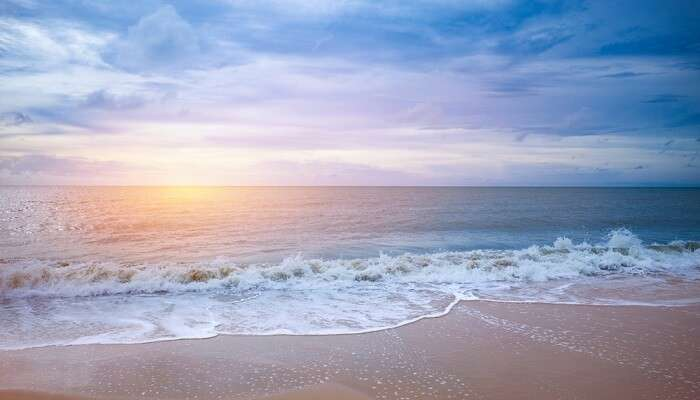
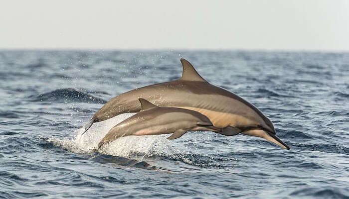
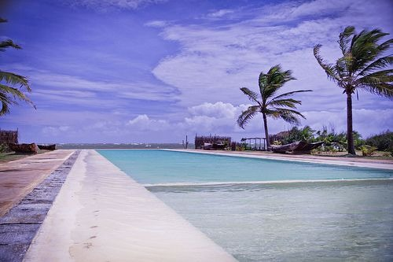

 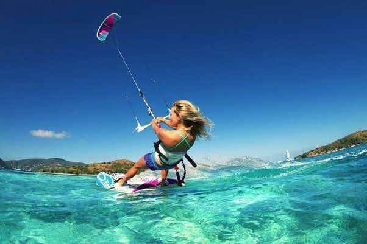
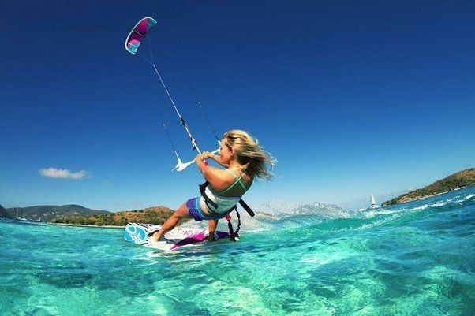

 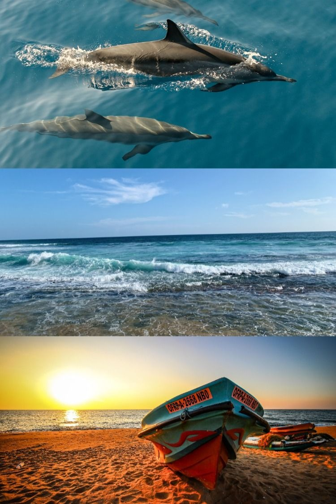
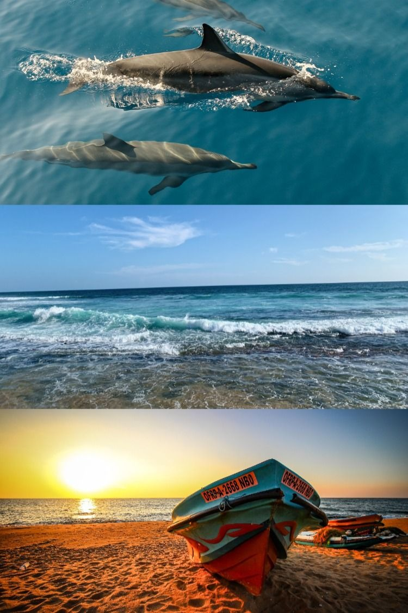
 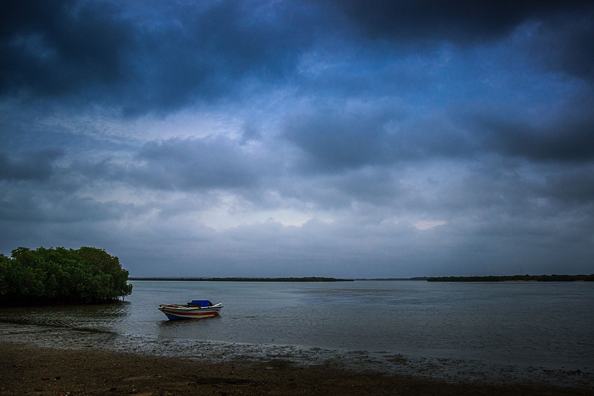
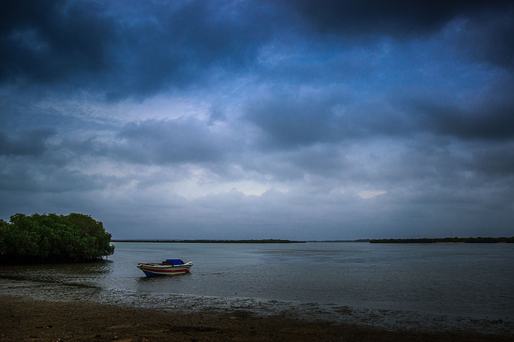
 


Koneswaram Temple
Believed to date back to 400BC, the Koneswaram Temple in Trincomalee is a significant Hindu Temple that has gone through many prosperous years, as well as many turbulent ones during European colonisation. Located inside the historic Fort Frederick, the temple gives that perfect balance of the island’s unique culture in an otherwise European setting.

...
The Koneswaram Temple is considered to be one of the Pancha Ishwaram (one of the five abodes of Lord Shiva), thus making it one of the most important Hindu temples in the whole country.
The temple flourished since its inception, as the many kingdoms that came, such as the Anuradhapura Kingdom, Chola Empire, Pandyan Kingdom, and the Jaffna Kingdom made sure to protect the place of worship.
Come the 17th century, and the ‘Temple of a Thousand Pillars’ was pillaged and destroyed by the Portuguese colonists, which resulted in the loss of many priceless artefacts. Regardless, the subsequent colonisers, namely the Dutch, and the British allowed the rebuilding of this sacred temple.
Moreover, during this time, many lost artefacts were recovered from many excavations conducted by archaeologists.
The temple is now adorned in many sculptures of Lord Shiva, Lord Ganesh and Goddess Parvati, along with many other elements that showcase just how significant this place of worship is to Sri Lankans.
 


 

 

 


Nilaveli Beach
There are a few things Sri Lanka has in abundance; lush greenery, fauna, and beaches. If you are a beach baby, you are going to want to visit each one of the beaches in Sri Lanka and Nilaveli Beach is one of them. The spectacular beach in Trincomalee City boasts of sandy shores and clear waters. Apart from lazing around, there are plenty of things you can do here to have a fun-filled excursion by the beach. Nilaveli means the ‘Moon shine over the land or open space’ in the Tamil language. And it is a great place to stay in your vacation in Sri Lanka if you want a peaceful outing with your family.
...
Nilaveli Beach is also famous for the beach resort and the coastal town located near the shores of the beach.
The nearby place which is very popular among the tourists is Uppuveli.
After the accident of Tsunami in the Indian Ocean, the tourist visit has reduced a bit.
But the popularity of this remained same among the people in Sri Lanka.
Among all the places near Nilaveli Beach, Pigeon Island National Park is one of them that you ought to check out on your visit since it is just 1 km away from the Nilaveli beach area.
A numerous number of coral reefs makes the sight even more beautiful.
There are plenty of things to do in this beach. And all the exciting things are in reasonable price here. The main things to do here are:
1. Scuba Diving
2. Boat Tours
3. Sunbathing on the beach
4. Sightseeing

 


Nine Arches Bridge
Nine Arches Bridge is situated in the Ella, Central province of Sri Lanka.
It was built in 1921, and it is constructed entirely out of rock, brick, and cement without a single piece of steel.
It connects the amazing Demodara railway station with the beautiful Ella railway station.
If you look up when standing below the bridge, you can see the sky among the arches.
Therefore The nine arch bridge also called “ The Bridge Of The Sky ”.
It has been designed over 3100 feet above sea level, with 25 feet in width, 80 feet in height, and 300 feet in length.

...
Nine Arches Bridge has not used a single piece of metal for its construction.
This is because Nine Arches Bridge has been built in the time of World war I, and at this time, there has been a lack of steel due to its high use of steel for weapons and other necessities.
As a result, the Nine Arches Bridge has been built by the locals using only cement, brick, and rock.
It is stated that there was once a drummer and devil dancer named P.K. Appuhami in Sri Lanka.
After losing a competition while he was going home, he was seen by a foreigner who was terrified of his devil clothes.
Later they have become friends and have shared the idea of establishing a railway between Demodara and Ella.
However, they were short of steel, but Appuhamy took over the project stating that he will construct it.
He then succeeded in completing it with the locals with a fraction of the cost and within a year while establishing the bridge on nine large rocks, thus naming it as Nine Arches Bridge.
The English didn’t believe his achievement and doubted the strength of the bridge, but Appuhami said that he would stand under the bridge when it is first being used.
bridge.jpgHe fulfilled his promise, and as a token of the gift, he got the remaining money that was supposed to be used on the bridge.
Thus he took home four carts of silver coins and gave each man in his village a coin.


Nil Diya Pokuna
Nildiya Pokuna, located at a distance of 13.3 km from the Ella, is a great place to have an adventurous experience. Legend has it that King Rawana brought Sita from India and kept her in a very comfortable and very safe place. Many believe that the site is now a ruined underground palace complex filled with blue water. This is a very risky, well worth the trip. You too can have this experience as soon as possible, but do not ruin the place.

...
Legend has it that King Rawana brought Sita from India and kept her in a very comfortable and very safe place.
Many believe that the site is now a ruined underground palace complex filled with blue water.
Legend has it that King Rawana abducted Goddess Sita and hid in this cave. It is said that there were several tunnels under this rock which stretched for many miles.
The tunnels from the Ravana Ella cave to the cold light of Nuwara Eliya near the Bogoda Rajamaha Viharaya and the Dowa Rajamaha Viharaya can still be seen today.
It is also a memory that bears witness.
In addition, it is believed that the tunnel was designed to reach several other areas hundreds of feet below the surface.
Rumor has it that there is a throne and a crown in it. However, no further action was taken as the tunnels were closed under the protection of the Police Special Task Force.
Ravana Falls or Bambaragala Falls is a huge waterfall that can be seen on the Ella-Wellawaya road in the Badulla District.
Thousands of acres of rock formations in the background of the waterfall and the surrounding area are associated with the history of King Rawana.
nildiya.jpgIt is also said that there is evidence to support many of these stories.
The Ravana Raja Maha Viharaya near the Ravana Falls and the cave near it which is considered to be the residence of King Rawana also give evidence of historical stories.


Nallur Kandaswamy Temple
Situated about 3km from Jaffna town is the Nallur Kandaswamy Kovil, one of the most significant kovils in Sri Lanka. The 15th century kovil, dedicated to Lord Murugan, the god of war, love and beauty, boasts grand arches and vibrant hues as part of its enthralling Dravidian architecture.

...
The golden pillars shine brightly amidst the arid landscape, standing tall at the kovil’s entrance.
As you walk through the arch, you’ll be welcomed by a high-ceilinged and spacious hall.
The central mulasthanam (shrine) is where you’ll find the prominent statue of Lord Murugan, with statues of many other major deities in its company.
The foundation for the kovil was laid in 948 AD, but due to constant invasion by foreign forces, the location of the temple moved around multiple times within Nallur.
The temple was finally established in the 13th century by Puvenaya Vaku, a minister to the then King of Jaffna, Kalinga Magha.
The temple holds both religious and social significance for its Tamil-majority Hindu devotees, to the extent that kovils have been built across the world and carry the same name as the Nallur Kandaswamy Kovil in honour of it.
Every year, the kovil hosts a festival (usually during the full moon in August).
The festival, which starts off with a flag-hoisting ceremony, carries on for 25 days.
During these days, devotees can be spotted having their bodies pierced with hooks, exhibiting no pain in response, an act of faith that is a fundamental part of their religious beliefs.
nallur.jpgPrior to entering the kovil, all visitors are required to cleanse themselves and be dressed in appropriate attire. For men, this includes either pants or sarongs that cover their legs, whereas the upper body should be bare. Women are to wear something long that covers their legs, and the same for their upper bodies, with tank tops and the likes being prohibited. No footwear is allowed within the temple’s premises.


Jaffna Fort
Close to the coastal village of Gurunagar, Jaffna, is where you’ll find Jaffna Fort, an intriguing piece of architecture built by the Portuguese between 1618 and 1625.
While under Portuguese occupation, the fort was called ‘Fortress of Our Lady of Miracles of Jafanapatão’, a name derived from the neighbouring church dedicated to Virgin Mary.
In 1658, the Dutch took hold of the fort, and the Portuguese lost their last stronghold in Sri Lanka.
The Dutch went on to expand the fort, but again, the fort swapped hands in 1795, when the British invaded and drove out the Dutch.
The fort remained a British garrison up until 1948.
...
Today, the 400-year-old fort is a visceral reminder of Sri Lanka’s colonial past, as well as a maritime heritage.
The massive fort complex overlooks the Jaffna lagoon, and while much of it remains intact, a certain part of the fort had to undergo extensive restoration efforts.
The fort is known as one of the greatest Dutch forts in Asia, owing to the extensive alterations they made to the original Portuguese design, including adding defensive triangles to mirror something similar to a snowflake (which is especially visible from an aerial vantage point).
The gorgeous fort is settled within the borders of a pentagon, which is, in turn, surrounded by a moat.
The fort’s walls were constructed with a combination of mortar, brick, stone and coral, and to this day, are mostly hidden underneath grassy slopes.
If you’re into history and the exciting architectural wonders it has gifted us with, a visit to Jaffna Fort would be ideal for you!


Galle Dutch Fort
The Galle Dutch Fort is one of the most treasured historical monuments in Sri Lanka, situated along the southwest coast. The fort was built by the Portuguese during their reign in Sri Lanka. The Dutch, later, took over the Galle Fort and renovated it. It was later by the British. This fort is one of the most important UNESCO world heritage sites amongst the many others in Sri Lanka. The beautiful mix between European Architecture and the South Asian Traditions of the 16th to 19th century is something you can’t miss. The Galle town covers an area of about 52 acres within the fortifications. (These fortifications withstood the 2004 tsunami!) The Galle Fort has so much offer, from its ruins and buildings to hotels and little shops. No matter what you are looking for, Galle Fort is the place you are looking for.
...
The Galle Fort has seen and adapted to many communities and ethnicities.
It had held onto bits and pieces of all of them despite the location’s changes throughout the centuries.
Even today, you can see how much glory and history it holds. It heralds praise from around the world for being a fortified city that fuses European architecture with south Asian traditions.
It had so much culture to offer, down right to the names of the street. The Galle town itself has so many elements that portray the culture.
The Dutch Reformed Church, Meera Mosque, the Buddhist Temple, the clock tower, the lighthouse, the list goes on and on.
The rectangular grid of streets with houses and terraces in Dutch Colonial style places your mind in the 18th century.
Under the leadership of Lorenzo de Almeida, the Portuguese reached Ceylon in 1505. Initially, they constructed a temporary fort in Galle.
Later, the Dutch conquered Sri Lanka from the Portuguese in 1640 and took control of the Galle Fort. It was reconstructed with further expansions and fortifications.
Soon, Galle Fort became the administrative center. In 1796, the Dutch handed over the Galle Fort to the English. The English started to use Colombo as their base.
This meant that they paid little attention to Galle Fort. This was probably one of the reasons why Galle Fort is still able to remain with all its historical glory.
It is pretty evident by now how culturally rich Galle is.
Galle Fort, as the name suggests, is built in the town of Galle, Sri Lanka. Galle is situated in the extreme southwest corner of the country along the southwest coast.
The fort is built on a rocky peninsular-like region, covering almost an area of 52 acres.
Highway A2 provides road transport to Galle from the capital city of Colombo-which is 113 kilometres away.
The Galle town has developed in all directions with the fort being the epicentre.
All the monuments and the historical buildings are well within access to the public.
Each of these monuments are filled with signage depicting the history.